|
The Wolf of Wall Street: How Money Destroyed a Wall Street Superman
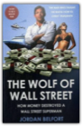
Jordan Belfort
Hedgehogging
Buffettology: The Previously Unexplained Techniques That Have Made Warren Buffett The Worlds
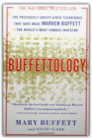
Mary Buffett, David Clark
HOW WARREN BUFFETT DID IT — AND HOW YOU CAN TOOIn the world of investing, the name Warren Buffett is synonymous with success and prosperity. Building from the ground up, Buffett chose wisely and picked his stocks with care, in turn amassing the huge fortune for which he is now famous. Mary Buffett, former daughter-in-law of this legendary financial genius and a successful businesswoman in her own right, has teamed up with noted Buffettologist David Clark to create Buffettology, a one-of-a-kind investment guide that explains the winning strategies of the master. * Learn how to approach investing the way Buffett does, based on the authors' firsthand knowledge of the secrets that have made Buffett the world's second wealthiest man * Use Buffett's proven method of investing in stocks that will continue to grow over time * Master the straightforward mathematical equipments that assist Buffett in making investments * Examine the kinds of companies that capture Buffett's interest, and learn how you can use this information to make your own investment choices of the future Complete with profiles of fifty-four "Buffett companies" — companies in which Buffett has invested and which the authors believe he continues to follow — Buffettology can show any investor, from beginner to savvy pro, how to create a profitable portfolio. Warren Buffett and the Art of Stock Arbitrage: Proven Strategies for Arbitrage and Other Special Investment Situations
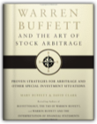
Mary Buffett, David Clark
FOR THE FIRST TIME EVER, DISCOVER HOW WARREN BUFFETT HAS MADE UNHEARD-OF PROFITS IN THE WORLD OF ARBITRAGE AND SPECIAL INVESTMENTS, AND HOW TO BE A PLAYER IN THESE VENTURES.Investors around the world recently learned that from 1980 through 2003 Warren Buffett’s arbitrage operations produced an astronomical average annualized rate of return of 81.28%. Even more amazing, this incredible rate of return was produced with very low rates of risk. Long considered one of the most powerful and profitable of Buffett’s investment operations, but the least understood, these special types of investments have been the edge that made Warren Buffett so phenomenally successful. Warren Buffett and the Art of Stock Arbitrage is the first book to examine Buffett’s special brand of arbitrage investing. Buffettologists Mary Buffett and David Clark explore the previously secret domain of Warren Buffett’s stock arbitrage investments. They explain how Buffett finds deals, evaluates them, picks the winners from the losers, and when he is willing to use leverage to help boost his performance in these investments to make amazing profits. Basic mathematical equations are included to help readers determine the projected rate of return, evaluate risk, and determine the probability of the deal being a success. Buffett and Clark provide detailed explanations and examples of Warren Buffett’s methods for arbitrage, and for investing in tender offers, liquidations, spin-offs, and reorganizations. They take readers step by step from the initial public announcement to tendering shares, explaining how Buffett evaluates risk and maximizes his profit at every step. Warren Buffett and the Art of Stock Arbitrage is a valuable companion to the other books in Buffett and Clark’s successful series—Buffettology, The Buffettology Workbook, The New Buffettology, The Tao of Warren Buffett, Warren Buffett and the Interpretation of Financial Statements, and Warren Buffett’s Management Secrets. Built to Last: Successful Habits of Visionary Companies
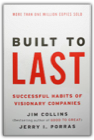
Jim Collins, Jerry I. Porras
Drawing upon a six-year research project at the Stanford University Graduate School of Business, James C. Collins and Jerry I. Porras took eighteen truly exceptional and long-lasting companies and studied each in direct comparison to one of its top competitors. They examined the companies from their very beginnings to the present day — as start-ups, as midsize companies, and as large corporations. Throughout, the authors asked: "What makes the truly exceptional companies different from the comparison companies and what were the common practices these enduringly great companies followed throughout their history?"Filled with hundreds of specific examples and organized into a coherent framework of practical concepts that can be applied by managers and entrepreneurs at all levels, Built to Last provides a master blueprint for building organizations that will prosper long into the 21st century and beyond. Age Of Turbulence - Adventures In A New World
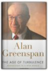
ALAN GREENSPAN
2007 hardcover ex-library without writing but has usual library markings
220 Best Franchises to Buy: The Essential Sourcebook for Evaluating the Best Franchise Opportunities
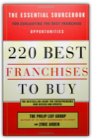
The Philip Lief Group, Lynie Arden
Today's economic climate, dominated by corporate giants and chains, can be a tough place for a new face, but buying a franchise is the best opportunity for a budding entrepreneur. 220 Best Franchises to Buy, revised and updated with all-new franchise ideas, shows you how to get in on the ground floor—and how to reap the benefits of running your own business without running all the risks.Here are all the facts you need to make an informed decision about the franchise operation that best suits your professional goals, financial resources, and personal needs. The book features a step-by-step breakdown of potentially confusing areas such as financial responsibilities and licensing fees. You'll also learn about what kind of training and marketing to expect for your money, and how to negotiate a contract in your favor. This new edition of a business classic has been completely updated and revised to include franchise opportunities for the new millennium—everything from advertising to the fastest-growing chains of health clubs. With over fifty thousand copies in print, 220 Best Franchises to Buy is one of the most trusted sources of franchise information for today's entrepreneurs. Buffett: The Making of an American Capitalist
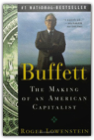
Roger Lowenstein
Since its hardcover publication in August of 1995, Buffett has appeared on the Wall Street Journal, New York Times, San Francisco Chronicle, Los Angeles Times, Seattle Times, Newsday and Business Week bestseller lists. The incredible landmark portrait of Warren Buffett's uniquely American life is now available in paperback, revised and updated by the author.Starting from scratch, simply by picking stocks and companies for investment, Warren Buffett amassed one of the epochal fortunes of the twentieth century—an astounding net worth of $10 billion, and counting. His awesome investment record has made him a cult figure popularly known for his seeming contradictions: a billionaire who has a modest lifestyle, a phenomenally successful investor who eschews the revolving-door trading of modern Wall Street, a brilliant dealmaker who cultivates a homespun aura. Journalist Roger Lowenstein draws on three years of unprecedented access to Buffett's family, friends, and colleagues to provide the first definitive, inside account of the life and career of this American original. Buffett explains Buffett's' investment strategy—a long-term philosophy grounded in buying stock in companies that are undervalued on the market and hanging on until their worth invariably surfaces—and shows how it is a reflection of his inner self. One up on Wall Street: How to Use What You Already Know to Make Money in the Market
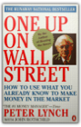
Peter Lynch, John Rothchild
In easy-to-follow terminology, Lynch offers directions for sorting out the long shots from the no shots by spending just a few minutes with a company's financial statements. His advice for producing "tenbaggers" can turn a stock portfolio into a star performer!
Pilgrimage to Warren Buffett's Omaha: A Hedge Fund Manager's Dispatches from Inside the Berkshire Hathaway Annual Meeting
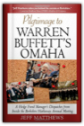
Jeff Matthews
They come to Omaha by the tens of thousands, flocking to an annual meeting that has become legendary for investors, businesspeople, and fans of one of the most savvy capitalists on the planet. They come to eat steak, buy furniture at a discount, and bask in the brilliance of value investor extraordinaire, Warren Buffet.Hedge fund founder, financial blogger, and professional skeptic Jeff Matthews got his own highly-coveted ticket to the Berkshire Hathaway meeting held only for shareholders and their guests—and proceeded to post reports on his blog, offering tempting glimpses into the much-discussed meeting. Now Matthews delivers a full-length account of his adventures at this infamous financial hoedown. In addition to offering a thoroughly entertaining first-hand account of Berkshire Hathaway's meeting, he answers questions investor's are asking, including: Does Buffett's famed penny-pinching cripple his companies?Why does Buffet—a bridge partner and best friend of Bill Gates—not own any technology stocks?How does the extremely rational Buffett square his well-known social progressiveness with his lily-white audience of investors?Is Buffet really an "Oracle"?What information, insights, and ideas do the meeting's attendees pick up-and how do they put this information to use in their own investments?Will Berkshire-Hathaway survive his death? Matthews also applies his financial acumen to harvesting potent lessons from his experiences that you can use as you survey the investment field, from finding how the world’s greatest investor evaluates not only businesses but the people who run them, to the importance of “just reading and thinking” and the value of having a smart, cynical partner. With the dispatches from this exclusive financial carnival, Pilgrimage to Warren Buffett's Omaha puts you at the forefront of an investor's dream come true. "There are very few secrets to be revealed about a man who really doesn’t have many secrets. But this book does take you inside that secret place – the Mecca of the Midwest. It’s very easy to read and full of classic Buffett-isms – well worth the pilgrimage for those of us who don’t own any Berkshire Hathaway shares or for anyone who wants to learn more about investing from the man who says the first rule of investing it to, 'read everything.'" —CNBC.COM Fooled by Randomness: The Hidden Role of Chance in Life and in the Markets
–Malcolm Gladwell, The New Yorker Finally in paperback, the word-of-mouth sensation that will change the way you think about the markets and the world.This book is about luck: more precisely how we perceive luck in our personal and professional experiences. Set against the backdrop of the most conspicuous forum in which luck is mistaken for skill–the world of business–Fooled by Randomness is an irreverent, iconoclastic, eye-opening, and endlessly entertaining exploration of one of the least understood forces in all of our lives. The Black Swan: The Impact of the Highly Improbable
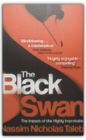
Nassim Nicholas Taleb
EE-34
Wisdom on Value Investing: How to Profit on Fallen Angels
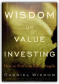
Gabriel Wisdom
Wisdom on Value Investing offers author Gabriel Wisdom's insights on succeeding in difficult markets. One of his favorite approaches-which is part classic value investing and part behavioral finance-is called "The Fallen Angels Investment Strategy," and it prepares investors to look past short-term value assumptions in order to capture profits. Throughout this book, Wisdom will show you how to capitalize on value plays where the fundamentals are actually strong, but the "general wisdom" surrounding the security has turned negative. He discusses how stocks with the most promise are ones that Wall Street has marked down without regard to their underlying value, and reveals how this type of intrinsic value discount provides a margin of safety during difficult times, and substantial upside rewards for those who find them early enough.Takes value investing one step further by mixing significant amounts of behavioral finance into the analysisPrepares investors to take advantage of other's mistakesA time-tested strategy for any type of market-up or downA classic look at value investing with a twist, this book will put you in a better position to succeed in both bull and bear markets. Includes a Foreword by Mary Buffett and David Clark, authors of Buffettology. |


My Library
Collection Total:
199 Items
199 Items
Last Updated:
Sep 29, 2012
Sep 29, 2012
 Made with Delicious Library
Made with Delicious Library